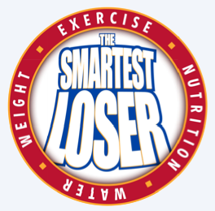

Frequently Asked Questions
Smartest Loser Program
Q. I lost weight this week, why don't I earn points?
A. If you have gained, you must re-lose before you can earn points toward your score
Q. How can I track my steps? Can I get a pedometer?
A. Your phone has apps for that! (Fitbit App, Health App to name just a few). Get a Fitness Tracker! (Fitbit.com, jawbone Up, Apple Watch). You can also get a basic pedometer.
Q. Where will the weigh ins occur?
A. Rob Harnsburger's office on 3rd floor
Q. Can I win more than once in the random drawing?
A. You can only win Random once during the contest, Male/Female awarded based on score and can win more then one week.
Q. What if I don't want to do the weigh-ins but I want to participate otherwise?
A. Absolutely! You can still win a random winner and get the prizes that are awarded for participation
Q. What if I don't know how to prepare fruits and vegetables to eat?
A. Raw fruits and vegetables are always great! Consider getting baby carrots and dip them in a low fat dressing or hummus you already enjoy! You can always get a mixed bag salad (that's a vegetable)
Q. Does a soft pretzel count as a fruit?
A. uhm... no.
Q. Why do I have to get weighed/measured?
A. The Wellness team is trying to provide an accountable measurable item to help us all get healthier. This provides extra motivation to stick to the plan of Smartest Loser. Your weight/body fat % is kept confidential to 2 members of the Wellness team.
Q. I'm traveling, how do I get weighed in?
A. You can use the previous week's weigh-in OR take a picture of your feet on the scale displaying the current weight for Wednesday morning and email to brendaj@emoneyadvisor.com
Smartest Loser App Page
Q. How do I tell if I'm already signed up?
A. You should have received an email. Email wellness@emoneyadvisor.com if you're not sure.
Q. Do I have to enter my details by a certain time?
A. The deadline is Thursday at noon after the Wednesday weigh-in.
Q. Can the app save my daily information
A. At this time the application will not save your score. v2.0 will hopefully be able to!
 Questions?
Questions?
If you have any questions, please email your Wellness Advocate at: wellness@emoneyadvisor.com